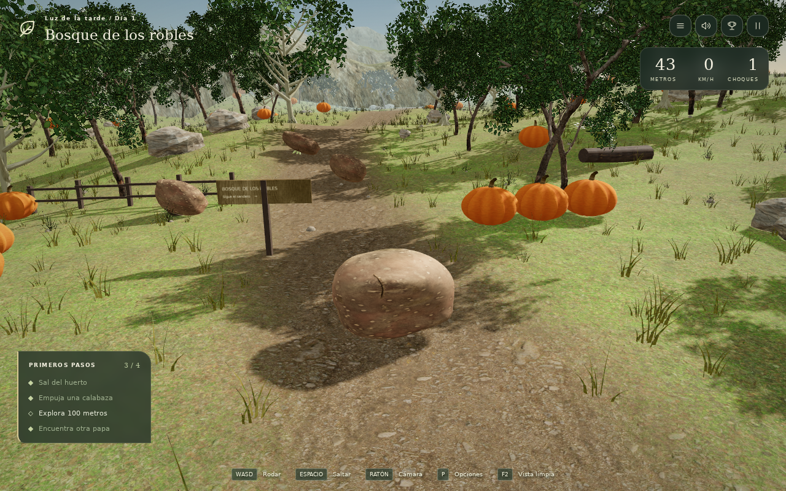
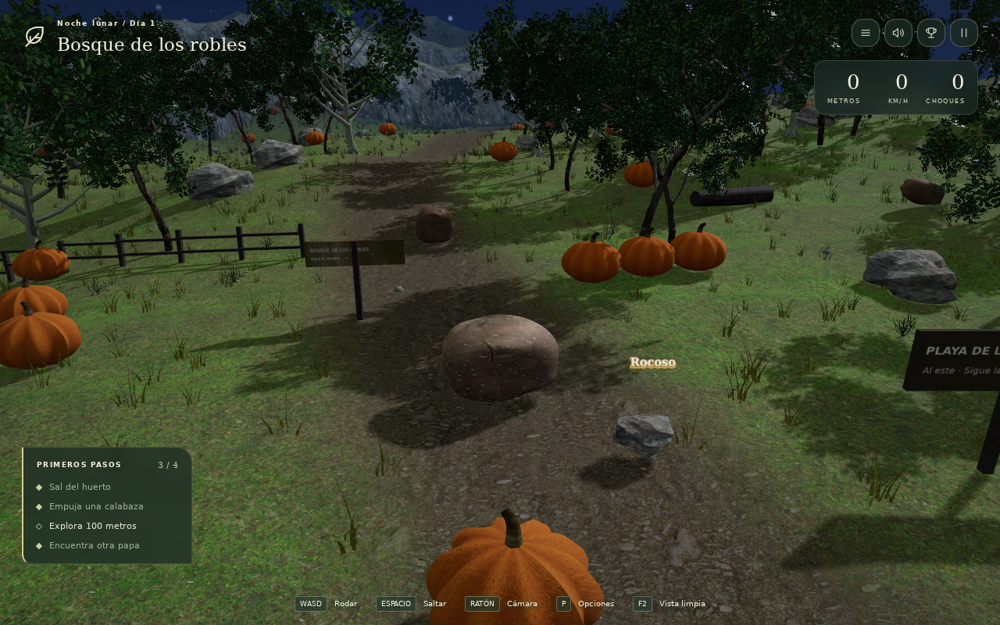
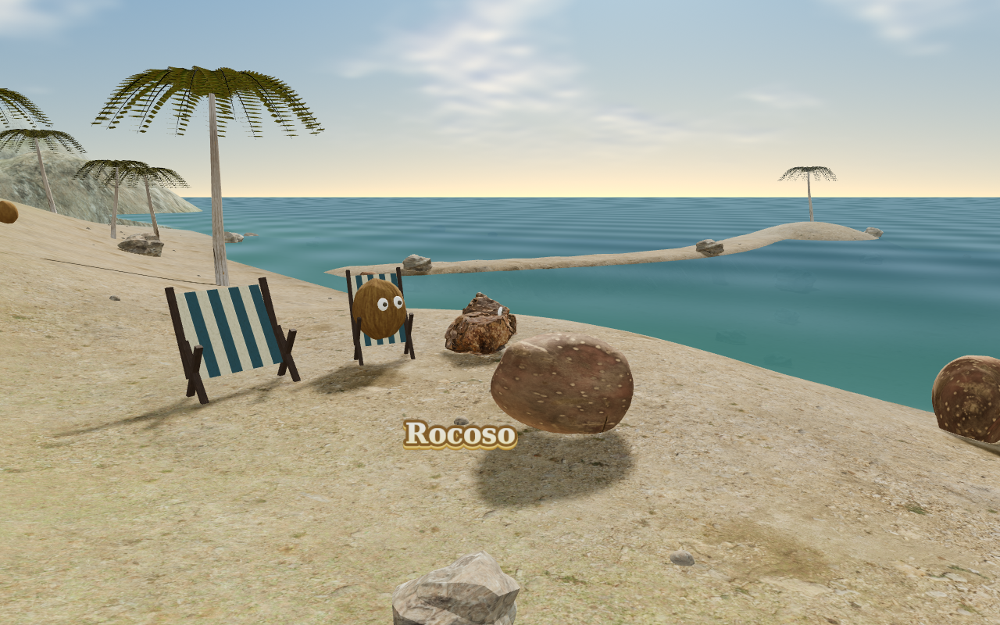
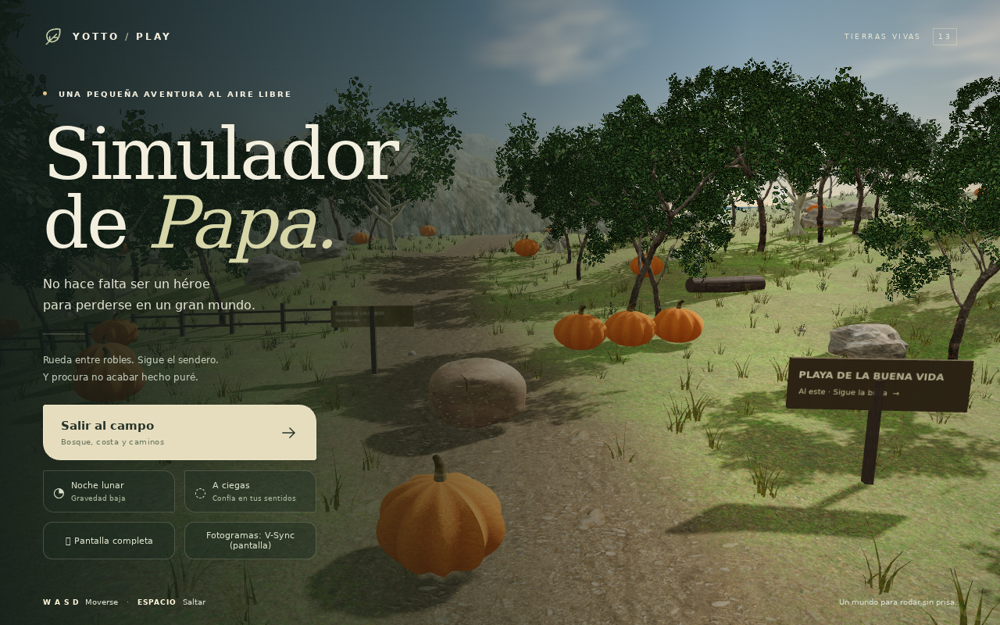
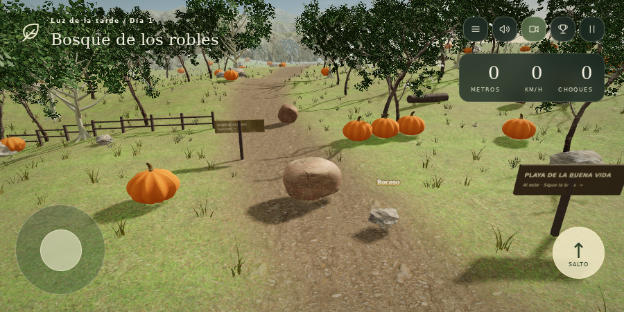
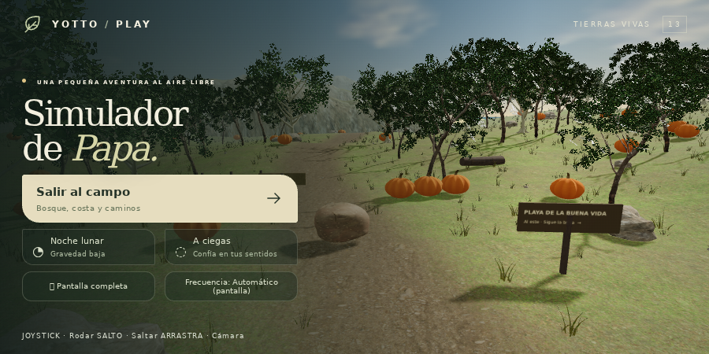

Un camino entre bosques y playas. Rueda, conoce a sus habitantes y vuelve mañana: tu recorrido queda guardado.



Tierra, hierba, arena y nieve con materiales fotográficos. Todos los recursos están incluidos.
Colinas, desniveles y un sendero sinuoso. La papa y la cámara se adaptan a la altura.
Troncos detallados, copas al viento, pinos, abedules, palmeras y hierba.
Atardecer cálido, sombras del follaje, bruma a lo lejos y noche estrellada.
Explora zonas áridas, laderas nevadas y una costa con cocos e islotes.
Embiste calabazas para encadenar combos. Atrapa la 🥇 papa dorada: 10s de velocidad e invencibilidad.
Logros inútiles, papas NPC con nombres graciosos, tu roca mascota 🪨 y pensamientos existenciales.
Tres formas de existir. Todas involucran rodar.
Luz de tarde, gravedad normal y exploración libre. Para papas relajadas.
Iluminación nocturna, estrellas y gravedad reducida. Mucho caos.
Sin visión, orientación por sonido. Buena suerte.
Capturas del juego en funcionamiento · versión 13.


